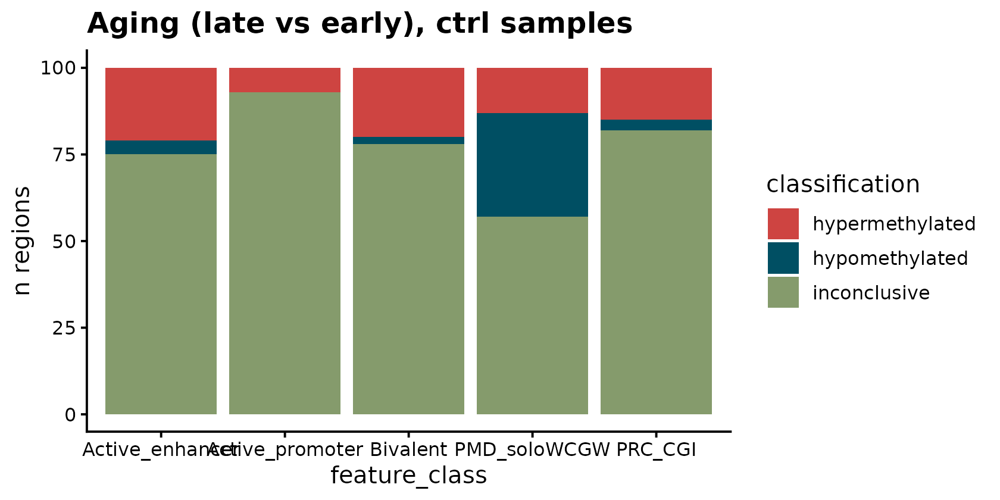
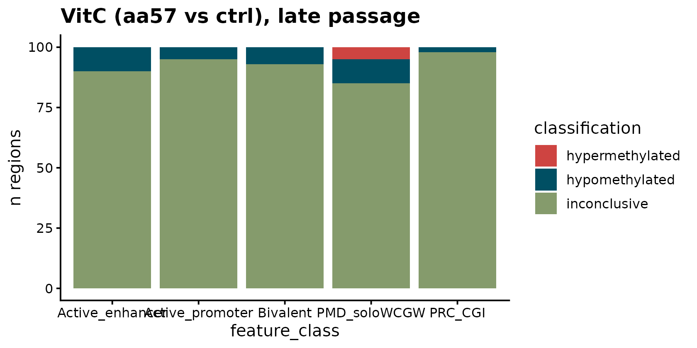
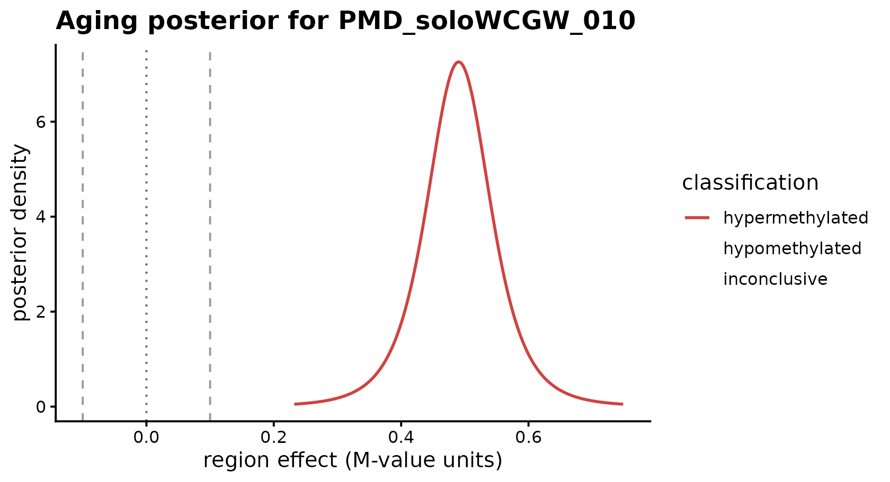
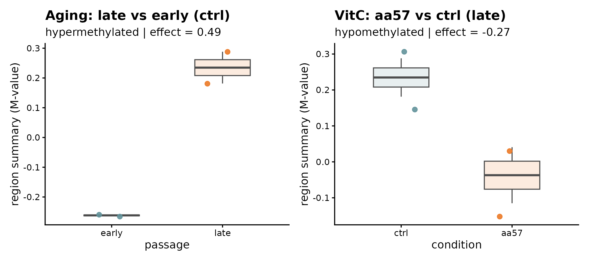
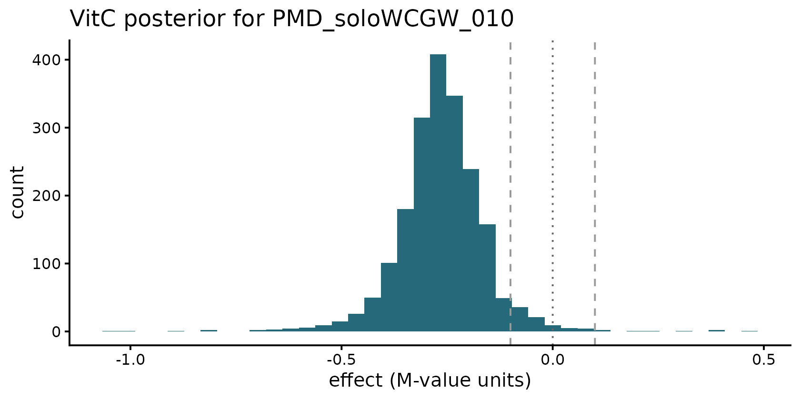

BREAD on real EPICv2 data: vitamin C in serially passaged fibroblasts
Jaemin Park
2026-04-19
Source:vignettes/bread-vitc.Rmd
bread-vitc.RmdBiological question
Ascorbic acid (vitamin C) is a cofactor for TET dioxygenases, which oxidize 5mC → 5hmC → 5fC → 5caC and drive active DNA demethylation. TET activity is thought to protect CpG islands from aberrant age-associated hypermethylation. In serially passaged human fibroblasts, two CpG sets consistently change:
- PRC-CGI (Polycomb-marked CpG islands, H3K27me3 ∩ CGI) gain methylation with passage number;
- PMD-soloWCGW (late-replicating solo-WCGW CpGs within partially methylated domains) lose methylation with passage number.
The question the experiment asks: does VitC supplementation attenuate either signal? A conventional probe-level DMP pipeline reports significant CpGs; BREAD asks the complementary, region-centric question directly:
For each predefined feature region, what is the posterior probability that the methylation effect exceeds a biologically meaningful threshold?
The packaged data
BREAD ships a small (~0.5 MB) subset of a real EPICv2 experiment from
our lab — 8 arrays on AG06561 fetal skin fibroblasts across a 2 × 2
design (condition × passage × 2 technical replicates). The data-raw
builder is data-raw/make_vitc_extdata.R (in the source
repository).
library(BREAD)
library(SummarizedExperiment)
library(GenomicRanges)
library(ggplot2)
library(patchwork)
se <- readRDS(system.file("extdata", "vitc_ag06561.rds", package = "BREAD"))
reg <- readRDS(system.file("extdata", "vitc_regions.rds", package = "BREAD"))
se
#> class: RangedSummarizedExperiment
#> dim: 6716 8
#> metadata(0):
#> assays(1): betas
#> rownames(6716): cg00003513 cg00004633 ... cg27639620 cg27642771
#> rowData names(7): Probe_ID CpG_Island ... H3K27AC H3K4ME3
#> colnames(8): 209725120091_R01C01 209725120091_R02C01 ...
#> 209725120091_R07C01 209725120091_R08C01
#> colData names(16): total_num batch_num ... sample_label group
as.data.frame(colData(se)[, c("condition", "passage", "replicate")])
#> condition passage replicate
#> 209725120091_R01C01 ctrl early 1
#> 209725120091_R02C01 ctrl late 1
#> 209725120091_R03C01 ctrl early 2
#> 209725120091_R04C01 ctrl late 2
#> 209725120091_R05C01 aa57 early 1
#> 209725120091_R06C01 aa57 late 1
#> 209725120091_R07C01 aa57 early 2
#> 209725120091_R08C01 aa57 late 2
length(reg); table(reg$feature_class)
#> [1] 500
#>
#> Active_enhancer Active_promoter Bivalent PMD_soloWCGW PRC_CGI
#> 100 100 100 100 100Five feature classes, 100 regions each, all on autosomes, each region
spanning ≥ 3 EPICv2 probes after a ±2 kb merge.
reg$feature_class will drive the
plot_feature_set() stratification below.
Aging contrast in ctrl samples
Under the ctrl condition (no VitC), BREAD should recover
the well-known aging signatures: PRC-CGI hypermethylation and
PMD-soloWCGW hypomethylation.
se_ctrl <- se[, colData(se)$condition == "ctrl"]
fit_aging <- fit_bread(
se = se_ctrl,
features = reg,
design = ~ passage,
contrast = "passagelate",
delta = 0.10,
prob_cutoff = 0.95,
min_probes = 3L,
feature_class_col = "feature_class"
)
#> Loading required namespace: GenomeInfoDb
fit_aging
#> <BreadFit>
#> mode : summary
#> backend : conjugate
#> input_scale: Beta
#> assay : betas
#> contrast : passagelate
#> delta : 0.1
#> prob_cutoff: 0.95
#> n_regions : 500 (of 500 input)
#> classifications:
#> hypermethylated 76
#> hypomethylated 39
#> inconclusive 385Classifications by class
mp <- unique(fit_aging@mapping[, c("region_id", "feature_class")])
res_a <- merge(results(fit_aging)[, c("region_id", "classification")],
mp, by = "region_id")
table(res_a$feature_class, res_a$classification)
#>
#> hypermethylated hypomethylated inconclusive
#> Active_enhancer 21 4 75
#> Active_promoter 7 0 93
#> Bivalent 20 2 78
#> PMD_soloWCGW 13 30 57
#> PRC_CGI 15 3 82As expected: - PRC-CGI and Bivalent regions skew
strongly toward hypermethylated with passage. -
PMD-soloWCGW regions skew strongly toward
hypomethylated. - Active promoters and
active enhancers are largely inconclusive
with this sample size (n = 2 per passage), consistent with the weaker
direct effect at those regulatory elements.
Bird’s-eye plot
plot_feature_set(fit_aging, feature_class_col = "feature_class") +
ggtitle("Aging (late vs early), ctrl samples")
VitC contrast at late passage
Now condition on late passage and test whether ascorbic acid supplementation demethylates any regions.
se_late <- se[, colData(se)$passage == "late"]
fit_vitc <- fit_bread(
se = se_late,
features = reg,
design = ~ condition,
contrast = "conditionaa57",
delta = 0.10,
prob_cutoff = 0.95,
min_probes = 3L,
feature_class_col = "feature_class"
)
fit_vitc
#> <BreadFit>
#> mode : summary
#> backend : conjugate
#> input_scale: Beta
#> assay : betas
#> contrast : conditionaa57
#> delta : 0.1
#> prob_cutoff: 0.95
#> n_regions : 500 (of 500 input)
#> classifications:
#> hypermethylated 5
#> hypomethylated 34
#> inconclusive 461
res_v <- merge(results(fit_vitc)[, c("region_id", "classification")],
mp, by = "region_id")
table(res_v$feature_class, res_v$classification)
#>
#> hypermethylated hypomethylated inconclusive
#> Active_enhancer 0 10 90
#> Active_promoter 0 5 95
#> Bivalent 0 7 93
#> PMD_soloWCGW 5 10 85
#> PRC_CGI 0 2 98
plot_feature_set(fit_vitc, feature_class_col = "feature_class") +
ggtitle("VitC (aa57 vs ctrl), late passage")
VitC demethylation is broadly distributed but, with only two
replicates per arm, most regions land in the inconclusive
class at prob_cutoff = 0.95. This is BREAD doing its job —
it does not claim more certainty than the sample size supports.
The biologically interesting intersection
The most interpretable cross-tab is aging × VitC: which regions that hypermethylate with aging are demethylated by vitamin C?
a <- classifications(fit_aging)
v <- classifications(fit_vitc)
common <- intersect(names(a), names(v))
xt <- table(aging = a[common], vitc = v[common])
xt
#> vitc
#> aging hypermethylated hypomethylated inconclusive
#> hypermethylated 0 17 59
#> hypomethylated 4 2 33
#> inconclusive 1 15 369The aging-hyper ∩ VitC-hypo cell contains the candidate VitC-responsive aging hypermethylation regions — the mechanistic story the project is chasing.
protected <- names(a)[a == "hypermethylated" & v == "hypomethylated"]
length(protected)
#> [1] 17
# Feature-class composition of the protected set
table(mp$feature_class[mp$region_id %in% protected])
#>
#> Active_enhancer Active_promoter Bivalent PMD_soloWCGW PRC_CGI
#> 4 1 6 5 1The protected set is enriched in PRC-CGI / Bivalent regions — consistent with vitamin C’s known role as a CpG-island guardian via TET recruitment.
Zooming in on one region
if (length(protected) > 0L) {
rid <- protected[1]
rid
plot_region_posterior(fit_aging, region_id = rid) +
ggtitle(sprintf("Aging posterior for %s", rid))
}
if (length(protected) > 0L) {
rid <- protected[1]
p_aging <- plot_region_data(fit_aging, rid) +
ggtitle("Aging: late vs early (ctrl)")
p_vitc <- plot_region_data(fit_vitc, rid) +
ggtitle("VitC: aa57 vs ctrl (late)")
p_aging + p_vitc
}
if (length(protected) > 0L) {
rid <- protected[1]
d <- posterior_draws(fit_vitc, region_id = rid, n = 2000L, seed = 1L)
ggplot(d, aes(x = value)) +
geom_histogram(fill = bread_colors("classification")[["hypomethylated"]],
bins = 40, alpha = 0.85) +
geom_vline(xintercept = c(-0.10, 0, 0.10),
linetype = c("dashed","dotted","dashed"),
color = c("gray60","gray40","gray60")) +
labs(title = sprintf("VitC posterior for %s", rid),
x = "effect (M-value units)", y = "count") +
theme_classic(base_size = 12)
}
Caveats
-
n = 2 per arm. The credible intervals are wide and
many regions remain
inconclusive. BREAD’s posterior probabilities are the honest answer given the data; loweringprob_cutoffto, say,0.80will promote more regions tohyper/hypobut also admit more false positives. - Technical replicates, not biological. Real variance in the
aa57effect across fibroblast lines is not captured by this experiment and would produce additional dispersion if included. - Feature-class regions here are constructed from the EPICv2 manifest’s probe-level annotations (CGI, PMD, histone marks) by merging nearby annotated probes. Users should consider higher-resolution external references (ENCODE chromHMM, segway, compartment-aware WGBS-derived PMD calls) when the question demands it.
Session info
sessionInfo()
#> R version 4.5.3 (2026-03-11)
#> Platform: x86_64-pc-linux-gnu
#> Running under: Ubuntu 24.04.4 LTS
#>
#> Matrix products: default
#> BLAS: /usr/lib/x86_64-linux-gnu/openblas-pthread/libblas.so.3
#> LAPACK: /usr/lib/x86_64-linux-gnu/openblas-pthread/libopenblasp-r0.3.26.so; LAPACK version 3.12.0
#>
#> locale:
#> [1] LC_CTYPE=C.UTF-8 LC_NUMERIC=C LC_TIME=C.UTF-8
#> [4] LC_COLLATE=C.UTF-8 LC_MONETARY=C.UTF-8 LC_MESSAGES=C.UTF-8
#> [7] LC_PAPER=C.UTF-8 LC_NAME=C LC_ADDRESS=C
#> [10] LC_TELEPHONE=C LC_MEASUREMENT=C.UTF-8 LC_IDENTIFICATION=C
#>
#> time zone: UTC
#> tzcode source: system (glibc)
#>
#> attached base packages:
#> [1] stats4 stats graphics grDevices utils datasets methods
#> [8] base
#>
#> other attached packages:
#> [1] patchwork_1.3.2 ggplot2_4.0.2
#> [3] SummarizedExperiment_1.40.0 Biobase_2.70.0
#> [5] GenomicRanges_1.62.1 Seqinfo_1.0.0
#> [7] IRanges_2.44.0 S4Vectors_0.48.1
#> [9] BiocGenerics_0.56.0 generics_0.1.4
#> [11] MatrixGenerics_1.22.0 matrixStats_1.5.0
#> [13] BREAD_0.0.0.9000
#>
#> loaded via a namespace (and not attached):
#> [1] sass_0.4.10 SparseArray_1.10.10 lattice_0.22-9
#> [4] digest_0.6.39 magrittr_2.0.5 evaluate_1.0.5
#> [7] grid_4.5.3 RColorBrewer_1.1-3 fastmap_1.2.0
#> [10] jsonlite_2.0.0 Matrix_1.7-4 GenomeInfoDb_1.46.2
#> [13] httr_1.4.8 UCSC.utils_1.6.1 scales_1.4.0
#> [16] textshaping_1.0.5 jquerylib_0.1.4 abind_1.4-8
#> [19] cli_3.6.6 rlang_1.2.0 XVector_0.50.0
#> [22] withr_3.0.2 cachem_1.1.0 DelayedArray_0.36.1
#> [25] yaml_2.3.12 S4Arrays_1.10.1 tools_4.5.3
#> [28] dplyr_1.2.1 vctrs_0.7.3 R6_2.6.1
#> [31] lifecycle_1.0.5 fs_2.1.0 ragg_1.5.2
#> [34] pkgconfig_2.0.3 desc_1.4.3 pkgdown_2.2.0
#> [37] bslib_0.10.0 pillar_1.11.1 gtable_0.3.6
#> [40] glue_1.8.1 systemfonts_1.3.2 tidyselect_1.2.1
#> [43] tibble_3.3.1 xfun_0.57 knitr_1.51
#> [46] farver_2.1.2 htmltools_0.5.9 labeling_0.4.3
#> [49] rmarkdown_2.31 compiler_4.5.3 S7_0.2.1-1